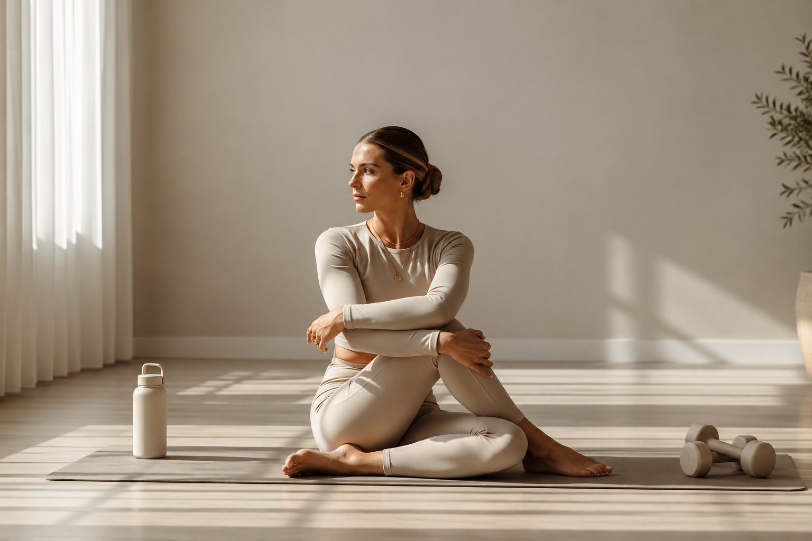
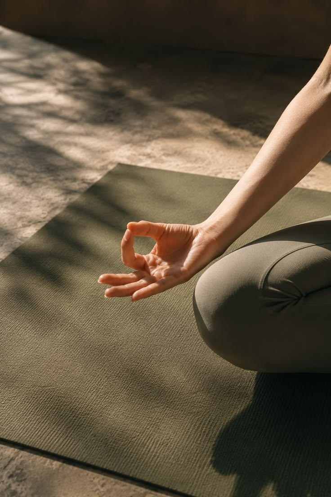

Saúde • Equilíbrio • Bem-estar
Saúde mental é um cuidado para a vida toda.
Editorial
Ter saúde mental não significa estar feliz o tempo todo, mas conseguir atravessar momentos de tristeza, ansiedade, frustração ou preocupação sem perder, de maneira persistente, a capacidade de conduzir a própria vida.
O que é saúde mental
Saúde mental é o estado de equilíbrio psicológico e emocional que permite à pessoa pensar, sentir, agir e se relacionar de maneira adequada diante das situações da vida. Ela envolve a capacidade de reconhecer e lidar com as próprias emoções, organizar os pensamentos, tomar decisões, manter relacionamentos saudáveis, adaptar-se às mudanças e enfrentar as dificuldades do cotidiano.
Não significa
Estar feliz o tempo todo
Significa
Conseguir atravessar
Momentos de tristeza, ansiedade, frustração ou preocupação, sem perder, de maneira persistente, a capacidade de conduzir a própria vida.
Nunca se falou tanto, e não por acaso
Nunca se falou tanto em saúde mental como atualmente, e isso não acontece por acaso. Vivemos em uma sociedade marcada por excesso de informação, cobranças profissionais, dificuldades financeiras, problemas familiares, insegurança, comparação constante com outras pessoas e uma rotina cada vez mais acelerada. As redes sociais também contribuem para esse cenário ao estimular comparações e manter muitas pessoas permanentemente conectadas. Além disso, estamos mais atentos ao tema e aprendemos a reconhecer situações que, no passado, muitas vezes eram simplesmente ignoradas ou tratadas como “frescura”. Falar mais sobre saúde mental é positivo, mas também precisamos aprender a cuidar dela diariamente.
Uma das estratégias mais importantes
Uma das estratégias mais importantes é a atividade física. Exercícios regulares ajudam a reduzir o estresse, melhorar o humor, favorecer o sono e aumentar a sensação de bem-estar. Para a maioria dos adultos, uma boa referência é acumular aproximadamente 150 a 300 minutos semanais de atividade aeróbica moderada, como caminhada rápida, bicicleta, natação ou corrida leve, podendo também incluir exercícios mais intensos em menor duração. O treinamento de força, realizado aproximadamente duas a três vezes por semana, também é importante. Os benefícios do exercício para a saúde mental são respaldados por pesquisas científicas. Um ensaio clínico randomizado, por exemplo, acompanhou 160 mulheres durante 12 semanas, comparando grupos de treinamento resistido e controle. O programa de exercícios incluiu oito exercícios, com 8 a 12 repetições e aumento progressivo das cargas. Ao final, foram observadas melhorias na qualidade do sono e reduções nos sintomas depressivos e de ansiedade, além de benefícios no desempenho cognitivo e na capacidade funcional. Os sintomas depressivos foram avaliados pelo questionário PHQ-9, e a ansiedade, pelo Inventário de Ansiedade de Beck. Embora os resultados não possam ser generalizados automaticamente para todas as populações, eles reforçam o potencial do treinamento resistido como aliado da saúde mental. Não é necessário transformar o exercício em uma obrigação excessiva: o objetivo é encontrar uma atividade que seja possível manter com regularidade e que também proporcione prazer.
Ensaio clínico randomizado
160
mulheres acompanhadas por 12 semanas, comparando treinamento resistido e grupo controle
O programa e o que foi observado
Os resultados não podem ser generalizados automaticamente para todas as populações.
Pequenas práticas que contribuem muito
Outros hábitos simples podem contribuir muito. Meditação ou exercícios de respiração, mesmo por 5 a 10 minutos diariamente, podem ajudar algumas pessoas a desenvolver maior atenção ao momento presente e a lidar melhor com o estresse. A leitura também é uma excelente forma de desacelerar e dedicar alguns minutos a uma atividade longe das notificações e da velocidade das redes sociais. Uma alimentação equilibrada, com variedade de alimentos, frutas, verduras, legumes, proteínas e fontes adequadas de carboidratos e gorduras, associada a uma boa hidratação, também faz parte do cuidado geral com o organismo e pode favorecer a disposição e o funcionamento adequado ao longo do dia.
Meditação e respiração
5–10 min
por dia, para desenvolver maior atenção ao momento presente e lidar melhor com o estresse.
Leitura
Desacelerar
Alguns minutos longe das notificações e da velocidade das redes sociais.
Alimentação e hidratação
Cuidado geral
Variedade de alimentos, frutas, verduras, legumes, proteínas e fontes adequadas de carboidratos e gorduras.

Uma pausa
O descanso e o prazer também fazem parte de uma rotina saudável.
Distanciamento das redes sociais e das telas
Também é importante estabelecer momentos de distanciamento das redes sociais e das telas. Não precisamos estar permanentemente disponíveis, acompanhando notícias, opiniões, discussões e a vida de outras pessoas. Reservar períodos do dia sem celular pode diminuir a sobrecarga de informações e abrir espaço para atividades mais significativas. Da mesma forma, ter momentos de lazer prazeroso — encontrar amigos, estar com a família, ouvir música, viajar, praticar um esporte, assistir a um filme, caminhar ao ar livre ou simplesmente fazer algo de que se gosta — não deve ser visto como perda de tempo. O descanso e o prazer também fazem parte de uma rotina saudável.
Lazer prazeroso não é perda de tempo
Não depende de uma única atitude
Cuidar da saúde mental, portanto, não depende de uma única atitude ou de uma solução imediata. É resultado de um conjunto de hábitos e escolhas construídos ao longo do tempo: movimentar o corpo, alimentar-se adequadamente, hidratar-se, dormir bem, ler, reservar momentos de silêncio, diminuir o excesso de redes sociais e valorizar atividades prazerosas e relações humanas. E, quando o sofrimento emocional é intenso, persistente ou começa a interferir significativamente na vida, buscar ajuda de um profissional de saúde mental é uma atitude de cuidado, e não de fraqueza. Afinal, assim como cuidamos do corpo para preservar nossa saúde física, também precisamos cuidar da mente para viver melhor.
O conjunto de hábitos
Assim como cuidamos do corpo, também precisamos cuidar da mente para viver melhor.
Compartilhe esta leitura com amigos e familiares.
Bons treinos!Referências científicas